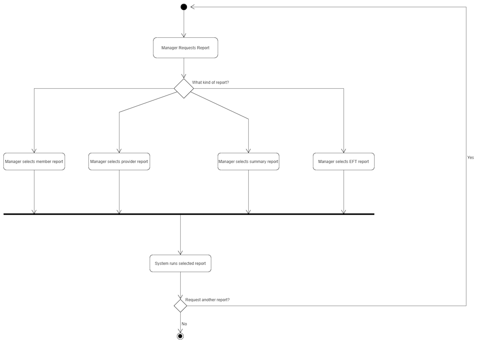
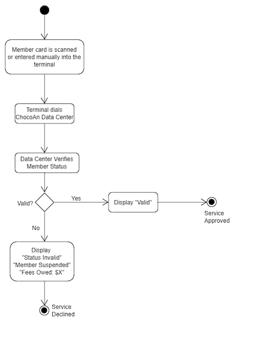

| Name |
CWID Number |
Crimson Email |
Hours Committed |
| Luca Conti |
11856871 |
lconti1@crimson.ua.edu |
2 |
| William Jefferson |
11930076 |
wtjefferson@crimson.ua.edu |
1 |
| Jacob Aid |
11950741 |
jiaid@crimson.ua.edu |
2 |
| Shanissee Lee |
12100396 |
srlee2@crimson.ua.edu |
2 |
| Caroline Johnson |
12100578 |
chjohnson9@crimson.ua.edu |
2 |
| TJ Trueblood |
12075410 |
tbtrueblood@crimson.ua.edu |
2 |
| Name |
Task Performed |
Percent Contributed |
| Luca Conti |
Class Diagram |
18% |
| William Jefferson |
Activity Diagrams |
10% |
| Jacob Aid |
Activity Diagrams |
18% |
| Shanissee Lee |
Activity Diagrams |
18% |
| Caroline Johnson |
Paragraph and Bitbucket statistics |
18% |
| TJ Trueblood |
Activity Diagrams |
18% |
Paragraph
Information such as the data corresponding to services, members, providers, as well as reports
should be computerized. This should be done by entering the information into a database. For the
purpose of this project, we will not use an actual database, but we can mimic the organization,
storage, and function of a database instead. The requiremements can be met by our members' computers.
The ChocAn system must be able to interact with payment systems, the terminal, and other software in
order to store data. Users should be able to manage/update data relating to themselves (and their
clients if applicable).
Stereotyped Class Diagram
Main Activity Diagram
1. Request Report

2. Run Main Accounting Procedure
3. Manage Member
4. Manage Provider

5. Validate Member

6. Bill ChocAn Member
7. Access Provider Directory